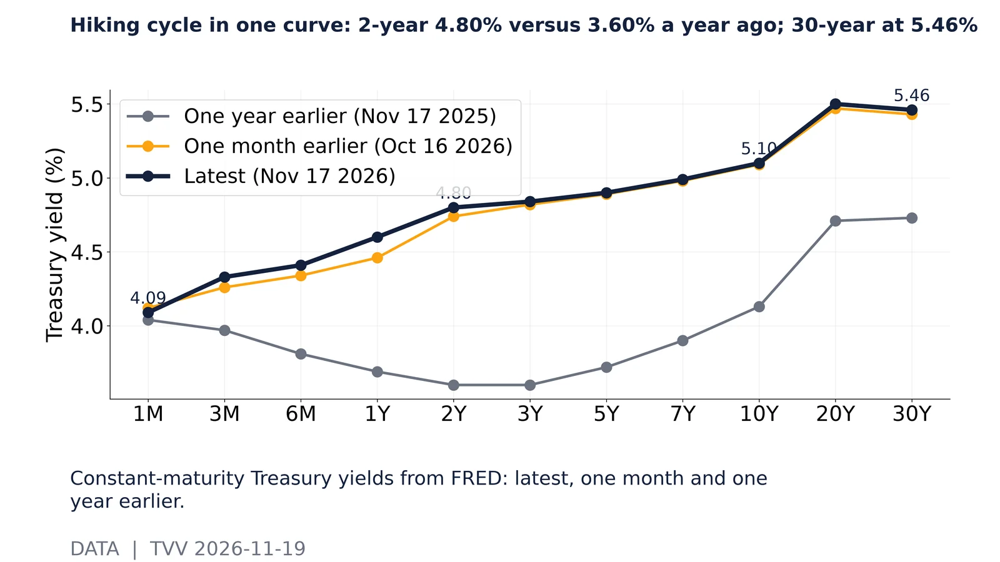
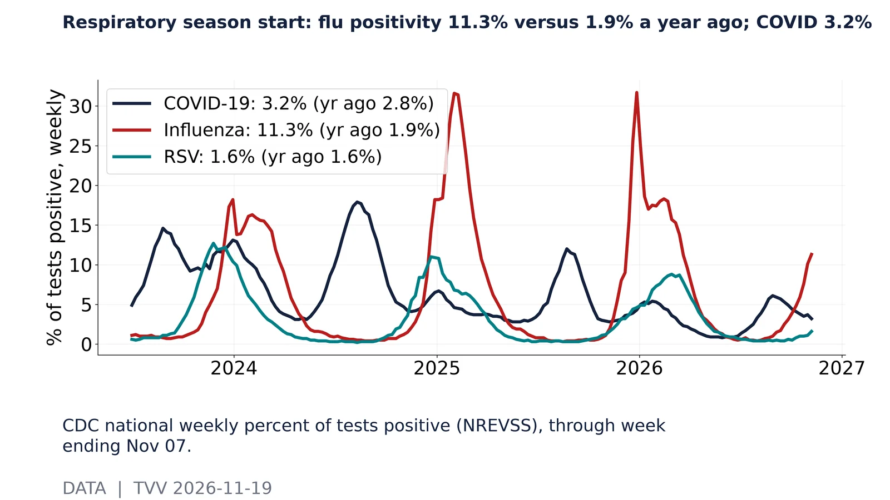
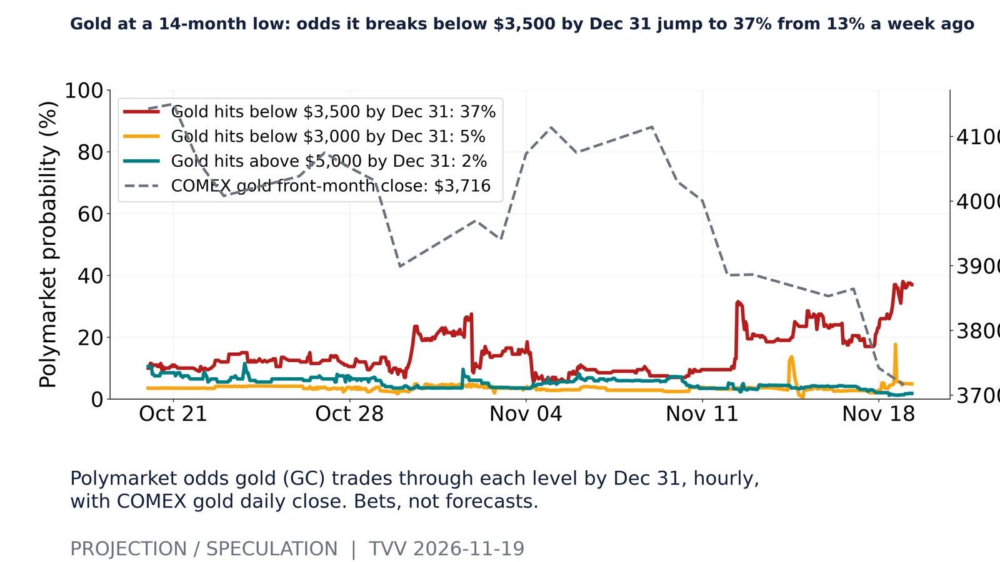

Rate-hike risk: easing path Pause-Pause-Cut collapsed to 3%; three straight hikes 36%. Polymarket odds for the Fed path over the Dec, Jan and Mar meetings, hourly since Nov 13. Bets, not forecasts. Source: https://polymarket.com/event/fed-decisions-dec-mar

Hiking cycle in one curve: 2-year 4.80% versus 3.60% a year ago; 30-year at 5.46%. Constant-maturity Treasury yields from FRED: latest, one month and one year earlier. Source: https://fred.stlouisfed.org/graph/fredgraph.csv?id=DGS2

Respiratory season start: flu positivity 11.3% versus 1.9% a year ago; COVID 3.2%. CDC national weekly percent of tests positive (NREVSS), through week ending Nov 07. Source: https://data.cdc.gov/resource/seuz-s2cv.json?$limit=50000

Gold at a 14-month low: odds it breaks below $3,500 by Dec 31 jump to 37% from 13% a week ago. Polymarket odds gold (GC) trades through each level by Dec 31, hourly, with COMEX gold daily close. Bets, not forecasts. Source: https://polymarket.com/event/what-will-gold-gc-hit-by-end-of-december
CEO delegation that wasn't: Musk odds 24% from 94% a week ago, Cook 1% from 70%. Polymarket odds each person joins Trump at APEC in China, hourly. Rubio and Bessent resolved YES. Bets only. Source: https://polymarket.com/event/who-will-join-trump-at-apec-in-china